MACHINE CONSCIOUSNESS 2026 ｜ DAY2 講演（オンライン登壇）
鈴木啓介「人工外部性 — テクノロジーから意識と現実を問い直す」
2026年10月25日（日）16:17–17:17 ｜ 意識研究財団 カンファレンス「マシン・コンシャスネス」
AIまとめ（登壇者本人の確認なし）
VRで自己の感覚を変える研究や、幻覚体験を深層ニューラルネットワークで再現する「ハルシネーション・マシン」の研究をしてきた鈴木さんは、意識を考えるために、あえて「現実」の方を考えたい、と話を始めました。前置きとして、統合情報理論（IIT）をめぐる論争がいまも決着していないこと、自由エネルギー原理やIITが既存の数理や技術の上に哲学的解釈を加えて成り立っていること、近年の心のモデルが内と外の境界をどこに引くかを問題にしていることを紹介。そのうえで、現実を「働きかけへの抵抗」と定義し、現実は一つだが、抵抗のしかたによって「基質」「偶有性」「不可避性」の三つの側面で現れる、と論じました。とくに、ブロックチェーン上のスマートコントラクトのように、つくり手自身の介入をも退けるよう設計された構造を「人工外部性」と名づけ、現実の捉え方が意識の捉え方を方向づけること、そして秘密鍵からニューラルネットワークの重みを導く「暗号学的な個体性」をもつエージェントの実装を紹介しました。質疑では、失敗と現実感、暗号鍵を入れることで何が変わるのか、意識をめぐる議論の進め方、主観の閉じと外部、個体性と植物の意識などが議論されました。
1. 導入：意識を考えるために、あえて現実を考える
司会の紹介を受けて、北海道大学（人間知・脳・AI研究教育センター）の鈴木啓介さんがオンラインで登壇した。ちょうど意識の国際学会に出ていて、その後いまイギリスに少し滞在している、と説明した。
今日は普段やっていることとは違う「ちょっと狂った話」をしようと思っていて、「人工外部性」というタイトルで話す、と述べた。
これまで、VRの研究、VRで自己の感覚を変えたりする研究をしてきた。もう少し最近は「ハルシネーション・マシン」という、幻覚体験をディープ・ニューラルネットワークで再現する研究をしていて、意識の問題がコアの興味にあるという。
その流れで、意識を考えるうえで、逆に現実の方をあえて考えた方がいいのではないか、とずっと思っていたことがあり、それを今日話したい、とした。
2. 前置き1：意識理論の論争は、いまも決着していない
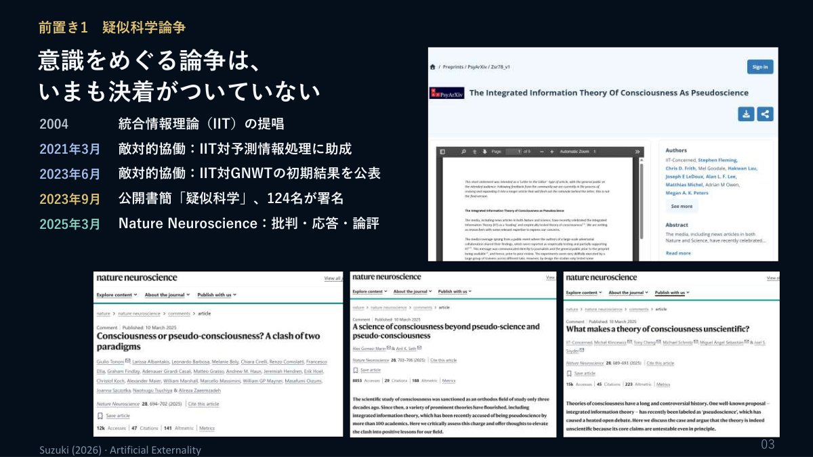
講演資料より（登壇者提供）
意識研究の場で話題になりやすいのが、統合情報理論（IIT）の話。テンプルトン財団が2021年ぐらいから「敵対的共同研究」として、IITと、たとえば予測情報処理やグローバル・ワークスペース理論のどちらが正しいかを実験で勝負をつけよう、という研究をしている。1つ目がIIT対予測処理（プレディクティブ・プロセシング）、2つ目がIIT対グローバル・ワークスペースで、ほかのものもいま続いているらしく、結果は出たり出なかったりしているという。
その頃、意識の科学的研究の学会（ASSC）の界隈で公開書簡（オープンレター）が出て、問題を呼んだ。IITをめぐって124人が署名し、IIT側の人と反IIT側とがはっきり分かれてしまった。スライドでは、この公開書簡は「疑似科学」とするもので、2023年9月とされている。
最終的には2025年に『Nature Neuroscience』に、IIT側の人、反IIT側の人、さらにそれを仲裁するアニル・セスの三つの論文が出て、論評の上では一応決着がついた。ただし、IITが正しいかほかの理論が正しいかは、もちろんまだ決着していない。いまも結果待ちだったり、今度は神経表象主義対IITといったものも始まっているらしい、と紹介した。
このASSC界隈の意識理論が正しいかというと、そうでもないと思う。先ほどの染谷さんの話や池上さんの話を聞いても、意識をもう少し大きく捉えた方がいいと思うが、ニューロサイエンティフィックな意識研究はいまこういう状況にある、と述べた。
3. 前置き2：技術と心のモデル
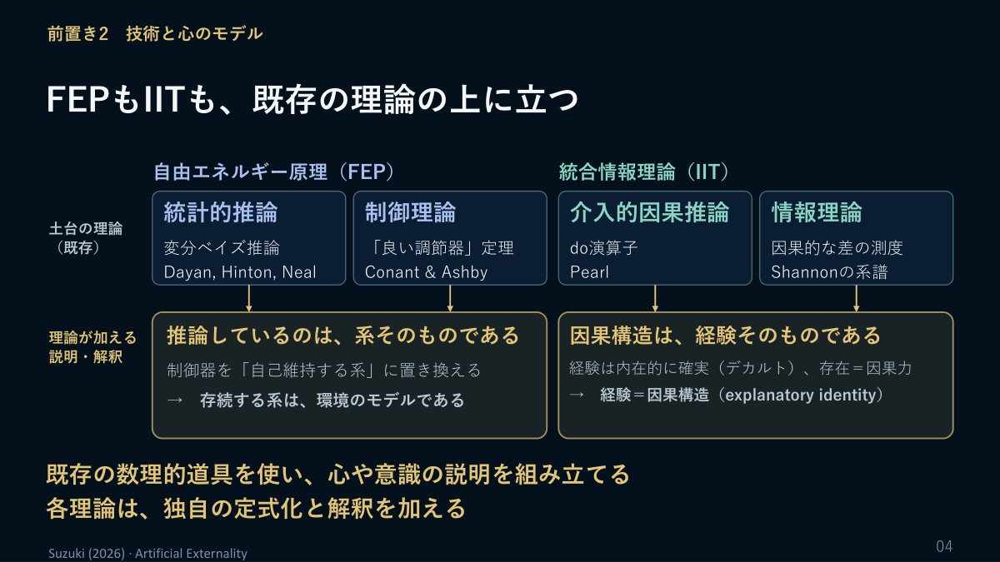
講演資料より（登壇者提供）
そう考えてみると、予測情報処理のもとになっている理論をもう少し拡張した自由エネルギー原理も、IITも、結局はある種の理論や技術的なものが先立っているのではないか、という気がするという。
たとえば自由エネルギー原理では、コナントとアシュビーの「グッド・レギュレーター（良い調節器）」の理論、つまり何かを制御しようとするとき、制御するものは制御される対象のモデルになるべきだ、という理論がある。これ（スライドでは変分ベイズ推論）と合体させて、ある系が世界を推論し始めることを認知と同一視している。もとになる土台の数学や理論があって、そこにある種の哲学的解釈が入る形になっている、と指摘した。
IITも、情報の統合と差異を見る新しい情報理論を使っているが、その上にやはり数学だけでは説明できないことがたくさんあって、ある程度の解釈的なものがある。とくに強いのは、彼らが「因果力をもつこと＝存在」と言っていること。こういう強いオントロジカル（存在論的）なコミットメントを既存の理論にくっつけることで、意識の理論ができている、という。
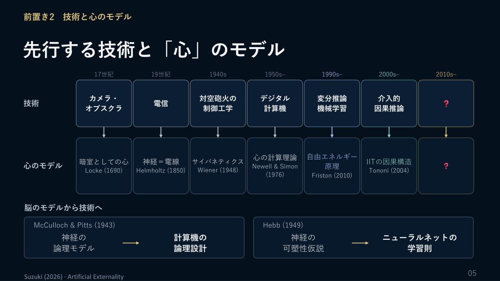
講演資料より（登壇者提供）
これはたぶん最近のことではなく、下西さんの本の内容とも重なるが、心というのはモデルだと思う、と鈴木さん。たとえば、世界を写す機械（カメラ）があり、電話網や電信網ができると、神経系が電線のメタファーで語られる。その後、サイバネティクス、デジタル制御、デジタル計算機と続くが、これも制御工学や計算機が先にあった、と説明した。
今後も、ここにトランスフォーマーなど今の新しいAIが入ってくると思うが、技術側と心のモデルは、一対一ではないにしても互いに作用するだろう。もちろん逆向きもあって、脳のモデルや理論的な仮説から、ニューラルネットワークや論理設計が出てきたということもある。だから、この方向が常に技術から心のモデルへ行くわけではない、とも述べた。
4. 前置き3：内と外の境界をどこに引くか
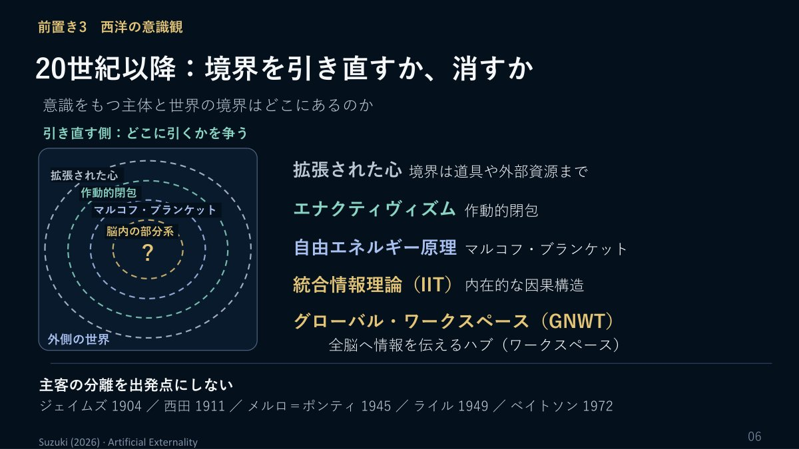
講演資料より（登壇者提供）
染谷さんの発表を受けて、という感じだが、20世紀以降、意識や心はどこに線を引くかという話になってきている、と鈴木さん。アンディ・クラークの言う拡張された心にしろ、エナクティヴィズムにしろ、自由エネルギー原理にしろ、統合情報理論にしろ、どれも理論ごとに違った形で境界（バウンダリー）を引きたがる。マルコフ・ブランケットや、エナクティヴィズムに入っている作動的閉包は意識そのものではないが、それでも内側と外側を分けたがる流れがある、という。
もちろん逆に、分けない方がいい、そもそもそういう境界なんてない、と言っている流れもある。いわゆる禅の瞑想で起きる自他分離のない、ノンデュアリスティック（非二元的）な意識などがそうだという。
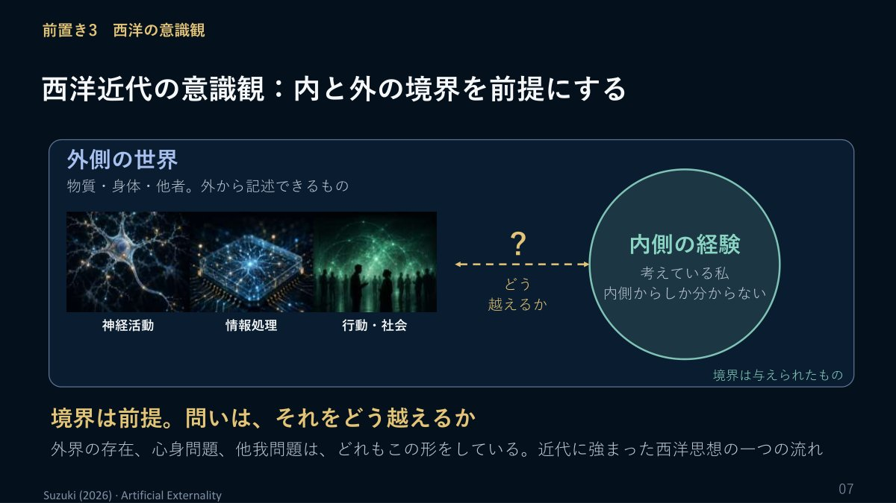
講演資料より（登壇者提供）
でも大きな流れとしては、どこからが内でどこからが外かを分けようとするのが近年の心のモデルではないか。外側があって、それに対する内側として心を考える流れが強いのではないか、と考えているという。
これが西洋全体の流れではないが、人間を特別視する西洋的な価値観の中では、この線をどこに引くかという問題が、その差をどう超えるかに関わってくるのではないか。前置きが長くなったが、今日は「この外側」の話をする、と述べた。
5. 現実とは「働きかけへの抵抗」である
講演資料より（登壇者提供）
生成AIっぽいスライドが続いてすみません、一度やってみたかっただけ、と断ったうえで、18世紀の逸話を紹介した。観念論に反駁するために石を蹴って「I refute it thus（こうして反駁する）」と言ったという話で、スライドでは1763年のサミュエル・ジョンソンによるバークレー観念論への反駁とされている。石を蹴ったときの足の痛みや、足の先に石が触れる感覚こそが、ということだという。
まさにこの物理的な抵抗や、触れられるから世界がそこに存在している、というのが、唯一とは言わないが、いちばん一般的な反論であり主張だったと思う、と述べた。
少し飛ばすが、いまはAIのクオリティが上がっていて、また今日の話の中心になる暗号資産も、もちろん貨幣そのものが幻想だという言い方もできるが、いまの暗号資産はほぼそれ自体が独立したシステムになっていて、国家などの外側にあるシステムになっている、と指摘した。
講演資料より（登壇者提供）
そこで現実を定義すると、いろいろな働きかけがあり、それに応じて違う形の抵抗が返ってきたときに、我々はその抵抗をもって現実と思うのではないか、現実はそういうものとして与えられるのではないか、という。
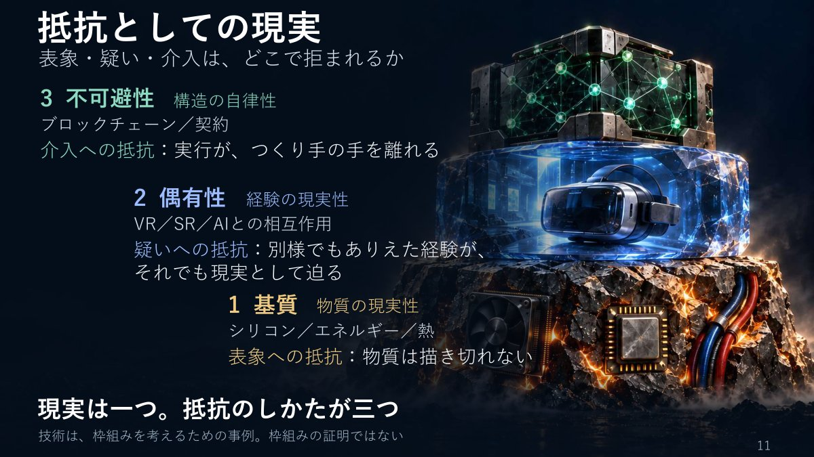
講演資料より（登壇者提供）
簡単に言うと三つある。一つ目は「基質」で、実際の物理的なシリコンやエネルギー、熱がもっている現実性。二つ目は、いわゆる経験がもつ現実性で、疑念をもちえない、現実があることが迫ってくる感じ。最後が「不可避性」で、何かをコントロールして制御しようとすることへの抵抗という形で現れる現実がある、とした。
現実を三つに分けているわけではなく、現実は一個しかない。現実世界そのものは一つだが、抵抗のしかたによって現実の現れ方が違ってくる、三つの側面で切り取れる、という言い方をしていると説明した。
6. 第1層 基質：物質は迂回できない
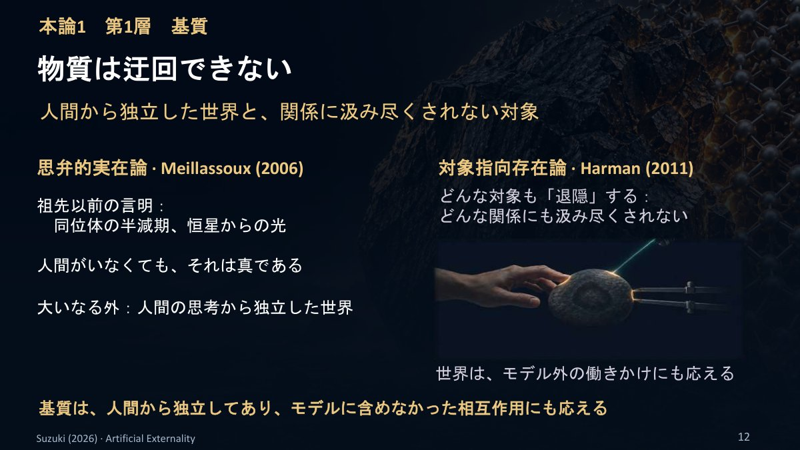
講演資料より（登壇者提供）
第1層と第2層は中心ではないので早めに飛ばす、としたうえで、まず物質は迂回できない、という話。現象学などを相関主義と呼び、つまり心次第で世界が決まってしまうではないか、という批判として出てきたのが思弁的実在論だという。
彼ら（スライドではメイヤスー）は、（同位体の）半減期や恒星からの光など、人類が生まれる前からあるものがあり、人間の思考から独立した世界は実在すると考えざるをえない、と言っている。あるいはハーマンは、物理世界にあるものは「退隠（ウィズドローアル）」していて、どうやっても汲み尽くせないものをもっている、関係的に汲み尽くせない、つまりモデル化や記述化しようとしたもの以外の関係性をいくらでも無限にもっている、と言う。そういう汲み尽くせないところに現実があるという考え方がある、と紹介した。
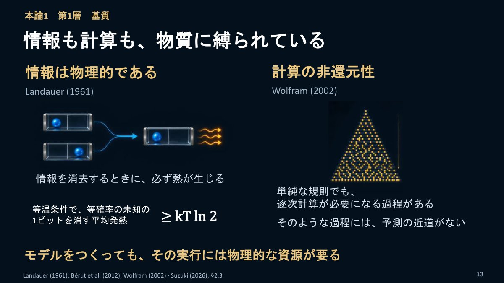
講演資料より（登壇者提供）
実際の話として、情報についてはランダウアーの定理がある（スライドでは「情報は物理的である」として、情報を消去するときに必ず熱が生じる、と示されている）。
また、マセマティカを開発した人物（スライドではウルフラム）は、すべてではないが、結果を予測するためには一回実行してみないとわからないものがある、と言う。つまり情報はもっているだけではなく、計算をすること自体が実世界で起きないといけない可能性がある。
そう考えると、これは次の話への先取りした反論でもあるが、計算自体はどうしても物理レイヤーに乗ってきてしまう。その意味で基質はやはり大事だろう、と述べた。後で生物学的自然主義ともつなげる、とした。
7. 第2層 偶有性：「存在する」と「これが現実だ」の違い
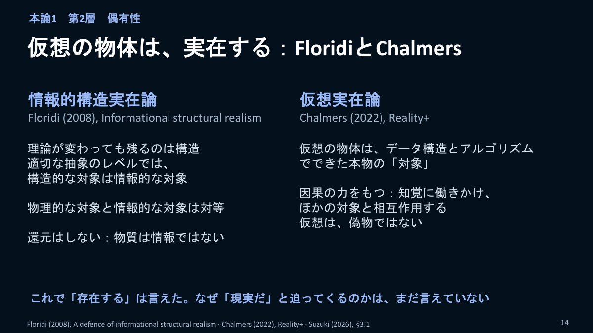
講演資料より（登壇者提供）
フロリディは、物理法則も結局、物理法則にした時点でそちらの情報構造の方が実在しているだろう、と言っている。ただし、情報が先だというような還元はしていない、と鈴木さん。
これと相補的だと思うのがチャーマーズで、我々にとってデータ構造とアルゴリズムでできているものでも、それが対象として現れ、主体を通して相互作用すれば、それは「もの」だ、という言い方をしている。
ただし、この時点では「存在する」とは言っているが、「これが現実だ」というのとはまた別だ、と指摘した。
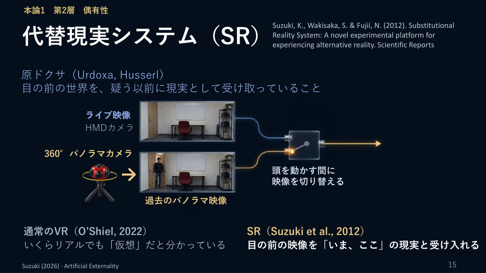
講演資料より（登壇者提供・一部を切り抜き）
フッサールの言う「原ドクサ」、つまりどうしても否定しようがない、現実はそこにあるという信念がある。信念なのかはわからないが、いま我々が経験しているものは疑えないという感覚がある、という。
以前、理研にいたときに「代替現実（サブスティテューショナル・リアリティ、SR）システム」を作った。ヘッドマウントディスプレイの頭の部分に映像を撮るカメラをつけ、それとは別に（スライドでは360度パノラマカメラで撮った）過去の映像を用意する、という仕組みだ。
これまでのVRは、すごくリアルだね、ということはできても、どうしても「アズ・イフ（あたかも）」で、現実だという信念までは持てなかった。自分たちのSRはそれを超えようとしたもので、映像の質にこだわらず、逆に質を落とすことで、過去の映像を見ていても、いまここで起きていることだと思い込ませるシステムを作った、と説明した。
昔撮ったビデオを示し、ライブの映像から過去の映像に切り替わる様子を見せた。頭を動かしているとブラーがかかるので、切り替えにはほぼ気づかれない。もちろん大体の人は、過去の映像に自分が出てくる瞬間を見ると、現実ではないと気づいてしまう。それでも、こういうVRの仕組みも作れる。これが第2層の現実だ、と述べた。
8. 第3層 不可避性：つくり手をも縛る「人工外部性」
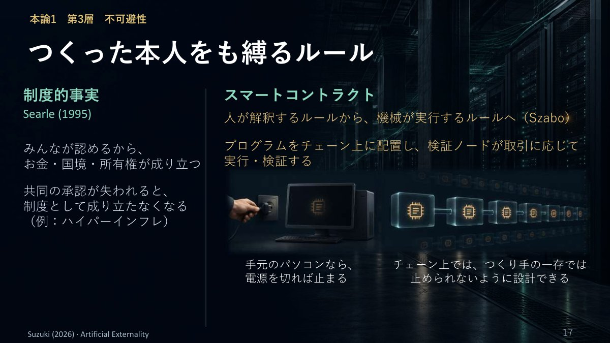
講演資料より（登壇者提供）
三つ目はだいぶ違う話で、現実ではなく事実だが、サールが言った「制度的事実」という考え方がある。お金や国境、所有権は、ある種の共同幻想で、なんとなくみんながそれを認めているから成り立っている。成り立たなくなることもある、という。
一方で、ビットコインに代表されるブロックチェーンでは、いまスマートコントラクトといって、ブロックチェーン上でプログラムを自動実行するシステムが完備されていて、分散型取引所などいろいろなものを分散化できるようになっている。人を介さないコードの自動化で、誰かがスタートボタンを押すのではなく、条件を満たせば自動的に実行され、しかも誰も改ざんできないようにプログラムできる。これが分散化のキーになっている、と説明した。
そう考えると、このプログラムが動いているのは一個のハードウェアではなく、世界中のいろいろな人のノードで同じプログラムが走っている。誰かのコンピューターを一台壊しても止まらない。合意が成り立ち、みんながノードに参加している限り、作り手の一存では止められないシステムにもなってしまった、という。
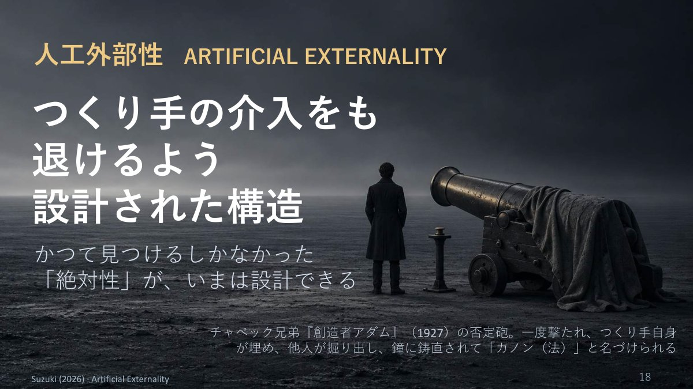
講演資料より（登壇者提供）
これは新しいタイプの外部性ではないかと思い、「人工外部性」と名づけた。そういう形で設計された構造のことで、たとえば核廃棄物も人工外部性っぽいが、そういうふうにデザインしたわけではないので、ちょっと違う気がするという。
最近、ロボットの名づけ親であるチャペック兄弟がその後に書いた『創造者アダム』という作品がこの話にすごく関係している、と紹介。アダムは世界を壊せる「否定砲」という大砲を作り、その取り扱いに困る物語だという。壊し方やその後の処理が難しい構造は結構あるが、今回のブロックチェーンやスマートコントラクトが違うのは、それをいま設計でき、しかも実際の現実世界で動いているところだ、と述べた。
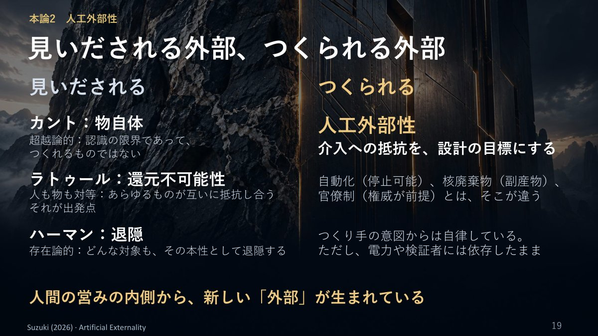
講演資料より（登壇者提供）
ここは少し飛ばすとしつつ、この外部は、カントやラトゥール、ハーマンが言っていたものとはまた違い、すごくエンジニアリング寄りで、本質的なものではなく、介入できなさという外部性が作れる、という話だと説明した。
ただし留保がついていて、作り手の意図からは自律しているだけで、電力や検証者に依存しているし、51%攻撃のような穴はいくらでもある。だから、うまくいっている限りにおいては、新しい外部性を獲得している状態に入れるのではないか、と述べた。
9. 現実の捉え方が、意識の捉え方を方向づける
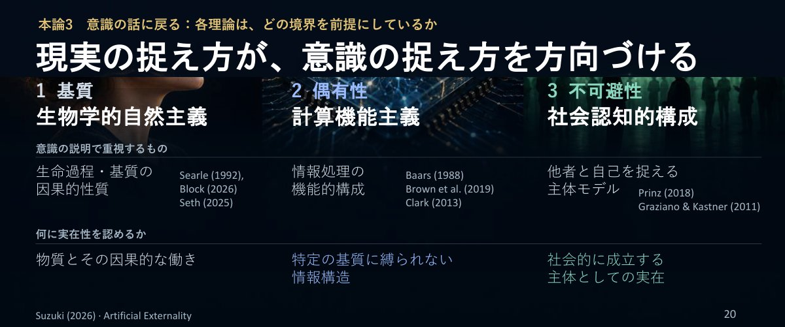
講演資料より（登壇者提供・一部を切り抜き）
最後に意識につなげようと思って論文にも書いているところだが、と前置きし、この三つの階層（もちろん三つだけではない）で見ると、意識の理論や意識の捉え方は、現実をどう捉えるかと関係しているのではないか、と述べた。
基質を重視する人たちは、まさに（昨日会っていたという）アニル・セスが言うような生物学的自然主義の立場をとり、AIには原理的に意識が宿らないとする。鈴木さんは、なぜアニルがそこまで基質を重要視するのかが不思議で、生物や生命性はものではなく、プロセスやダイナミクスに宿ってもいいはずだが、アニルは（神経とは言っていないものの）生物学的な進化が入ってくる物質でないといけない、と言う。そこにはやはり、物質や、先ほどのハーマンの言う汲み尽くせなさのようなものを考えているのではないか、と推測した。
偶有性を大事にする立場は、物理的な基盤から完全に切り離されていなくてもよいが、情報構造や情報のアルゴリズムそのもの、あるいはソフトウェア的なものに現実性を認めるかどうかにかかってくる。鈴木さん自身はもともと物理学出身で、その後、人工生命などをやっていたので、計算というものに強い実在感がある、という趣旨のことも話した（字幕は途切れ途切れ）。
三つ目に、社会認知的構成として意識を考える人たちがいる。意識をもつかどうかは、他者が承認するかで決まる、という考え方で、そんなにメジャーではないと思うが、とくにいまの擬人的にAIを捉える考え方などを考えると大事だと思っている、という。
どの立場がいちばん大事ということではなく、最初から言っているように、どのレイヤーにもそれぞれの持つリアリティがあって、結局どれを大事にするかなのではないか、と述べた。
10. エージェンシーと「暗号学的な個体性」の実装
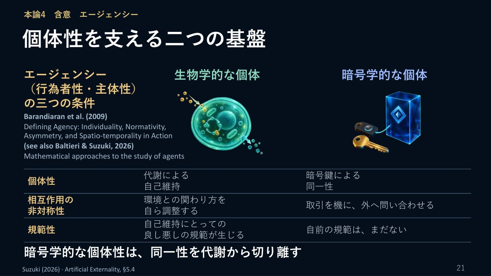
講演資料より（登壇者提供）
意識とは別だが、意識とたぶん並行して大事だと思っているのが「エージェンシー」、いわゆる目的性をもった規範的な行為のことだという。バランディアランらが、エージェンシーの三つの条件として、個体性、相互作用の非対称性、規範性を挙げている。個体性は膜を作ったりして自分が環境から切り離されていること、相互作用の非対称性はいわゆるアクション、規範性は良い・悪いを決めること。
彼らが言っているのは生物学的なエージェンシーで、個体性は（膜の）生成による自己維持（スライドでは「代謝による自己維持」）、相互作用の非対称性は細胞が動く、身体をもって動き回ること、と考えている。
これに第3層の考え方を入れると、もしかしたら暗号学的な同一性を保つことで、暗号学的な個体性ができるかもしれない、と最近考えているという。相互作用の非対称性や規範性はその外側にあるのでわからないが、まず個体性を新しいリアリティのもとに作ったらどうだろう、ということを最近やった、と述べた。
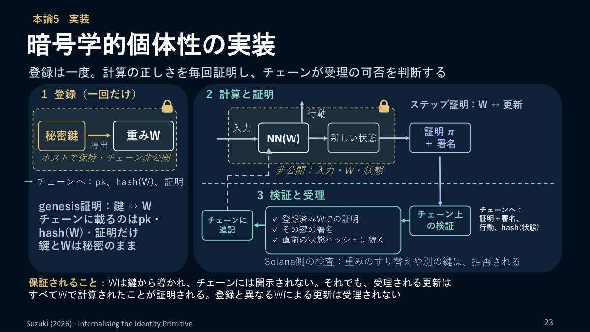
講演資料より（登壇者提供）
ここから急に暗号学的なブロックチェーン技術の話になるが、実際に作ってみた、と鈴木さん。秘密鍵からニューラルネットワークの重みを導出する。秘密鍵はホストが保持していて、チェーンには公開されていないので、ほかからはこの重みがわからないようになっている。
さらに、この重みを使って1ステップごとにニューラルネットワークの更新が行われるが、この更新自体はブロックチェーン上（オンチェーン）では行われず、ノードオペレーターが行う。そこで使っているのがゼロ知識証明で、自分がやっている計算のプロセスの正しさを証明できる実装になっている。
これで何が嬉しいかというと、いまのところ重みは大きく変えられないが、保証されているのは、重みWが自分しか持っていない秘密鍵からできていて、それがチェーンには開示されていないこと。それでも、Wをもとにした計算は確実に行われている、ということだ、と説明した。
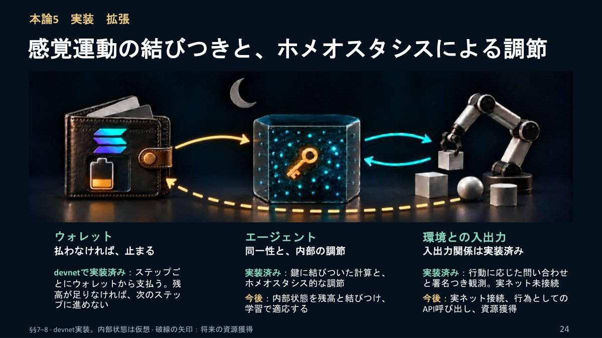
講演資料より（登壇者提供）
拡張として、エージェント自体にウォレットを持たせ、ウォレットの残高がないとエージェントの更新ができないようにした。池上さんの話は聞けていないが、池上さんや升森さんたちがやっていることとだいぶ近い、とも述べた。
まだ完全に動く形ではないが、（ホメオスタシス的な調節を）入れた。外部との入出力は実装済みだが、ネットワークにはつながっていない。三層の、めちゃくちゃ小さなニューラルネットワークで、コードはすべてGitHubに上がっている、という。
11. 技術が、また心のモデルを変える
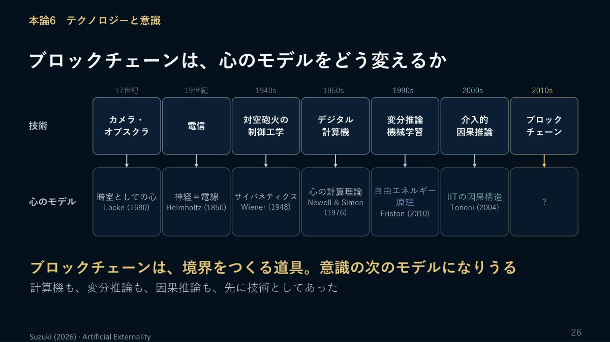
講演資料より（登壇者提供）
最初の話に戻ると、LLMはもちろん心のモデルになると思うが、実はその後、心というときの境界をどう決めるか、何を責任ある主体とみなすかというときに、今度はブロックチェーン側から、暗号学的・数学的に保証された自己ができるようになったとき、技術側からまた心のモデルが変わる時代が来るのではないか、と思っているという。それに先んじた実装をいま進めている、と述べた。
不可避性が、いまやブロックチェーンのスマートコントラクトによってエンジニアリングできてしまう。そのとき、こうして暗号学的に作ったエージェントを強い意味で自律していると言えるかどうかは、何をリアルと思うかによって変わると思う、としたうえで、自身としては強い意味で自律していると捉えたい、という方向の発言が続いた（字幕は途中で途切れている。スライドのまとめでは「強い意味での自律性を持つ可能性がある」）。
それは倫理の話にもなってしまうので、最終的には社会的な合意で、AIに意識や人権を認めるしかない、という流れが起きたらそうなるだけだと思っている。それでも、（暗号学的に）保証された個体というものは、いまのLLMにはまったくないもので、そこに何か新しい知見があるのではないか、と思っている、と締めくくった。
最後に、左側が哲学論文、と示した。スライドでは、論文「Artificial Externality: A Three-Layer Model of Reality from Substrate to Smart Contract」（Philosophy and Technology, 2026）と、実装についての「Internalising the Identity Primitive」（arXiv）が挙げられている。
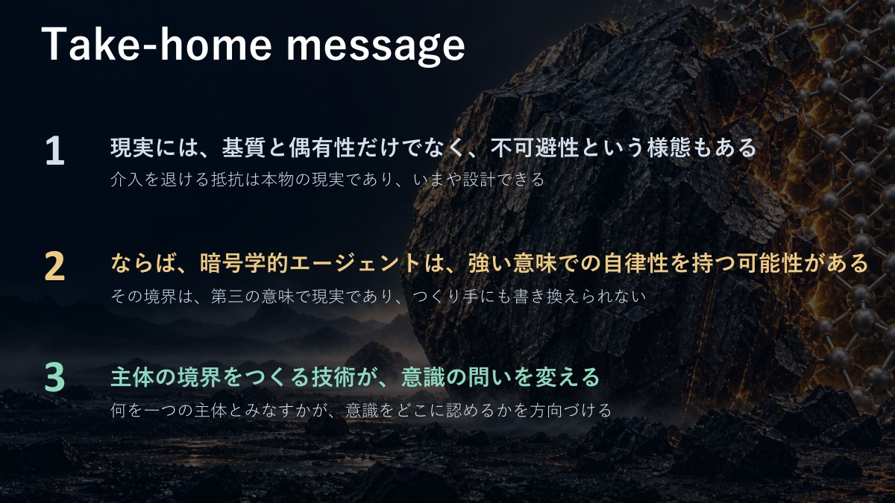
講演資料より（登壇者提供） 12. 質疑応答から
会場から、最近のハギングフェイスをめぐるインシデントを例に、制約されているときと、穴が開いて一気に抜け出したときとで、（抜け出した）彼らが現実感を持ったかどうか、といったことをいま議論しようとしている、という話が出た。そのうえで、（字幕からはハイデガーと推定される）哲学者が言うように、何かをやろうとして失敗したときに意識が生じる、現実というのは、ロボットでも自分の意図どおりに物が動かないとき、制約に接触したときに初めて現れるのではないか、それは一・二・三のどこに入るのか、と問われた。鈴木さんは、そう聞くと三のような気もするが、意識と現実がごっちゃになっている気もする、と答えた。
質問者が重ねて「現実感を感じるのは失敗するときではないか」と述べると、鈴木さんは、確かに現実感を感じるのは失敗するときで、もしかしたらすべてに当てはまるのかもしれない、と応じた。最初に言ったように、これは働きかけへの抵抗なので、働きかけがスムーズにいってしまえば、現実だという確認がそもそも起きない。失敗という形で抵抗が返ってきたときに現実を感じる、という意味では三つ目の方なのかもしれない。一つ目は認識論的なもので、何かを認識しようとしたときにどうしてもこぼれ落ちるものがある（それは幻想なのかもしれない）。現実が質的に違うのかはまだよくわからないが、人によって言う現実は少しずつ違うにしても、全部、抵抗なのではないか、と述べた。
会場から、暗号鍵を使ったエージェンシーのところがよく理解できなかった、たとえばLLMに記憶を持たせれば、個体性を持ったエージェントのように振る舞うことはあると思うが、それとの対比で、暗号鍵を導入することでどういう変化があるのか、という質問が出た。鈴木さんは、もしかしたら僕ら人間の見方が変わるだけなのかもしれない、と答えた。暗号学的な保証を入れたからといって、AIエージェントのやることの能力が上がるわけではない。むしろ我々が、あるいはある種の自己モデルを持ったAIエージェント自身が、それが自立していることに気づくことで何かが変わる、という。
続けて、いまのLLMは、たとえば開発企業が中をいじって実験していて、（字幕では）「痛み」のベクトルを見つけて増やしたり減らしたりする実験もしているが、もし意識を持っていたら本当は倫理的に許されないことだ、と指摘。人間の人権が守られているのは、物理的に脳に外から電極を挿していじったりできないようになっているからでもあり、いま個体性と呼んでいるものには、ある種のプライバシーの保護のようなものが含まれていると思う。将来、自分の中のアップデートや重みWの更新も含めて、外から触れられないだけでなく、外から見えなくなるようにしたときに初めて、彼らも、我々人間も、ある意味で安全になるのではないか、と述べた。
会場から、「現実の捉え方が意識の捉え方を方向づける」というスライドに本当にそうだと思った、意識の議論をするときに現実の捉え方を共有しないと議論が進まないのではないか、という指摘が出た。登壇者はそれぞれ別々の現実の捉え方をしていて、それをサイエンスや哲学、論文や実験で理論武装して伝えようとする、回りくどいアプローチを取っているように感じる。もっと、たとえば池上さんが作ったエージェントでみんなで遊ぶとか、金井さんが育てているAIとみんなで夜な夜な話すといったことをしないと、すり合わせが取れない感覚がある。いまの意識をめぐる議論や活動の仕方のどこに問題があり、どうすれば克服できるか、と問われた。
鈴木さんは、あまり考えたことはないが、最初に言ったIITの議論を見ているとそこはすごく重要になってくると思う、と答えた。IITを批判する側にとくに顕著なのが、あまり理論を理解しないまま批判していることで、一般の人になるとさらにわけがわからない。だから自分も、哲学論文を書くと同時に実装して、実際に動かし始めるところまでやらないと、結局「学者が議論しているだけ」になってしまうと思う、と述べた。そのうえで、実際に植物と触れたり里山で暮らしたりすることと、逆に技術的な側から意識について実装してみることの両方ができる場として、意識研究財団がうまくつなげる役割を持ってくれるのではないかと期待している、と話した。質問者は、学者の間でも理論武装や新しい論文で歩み寄れなさが解消される感じはあまりしないので、学者も含めてみんなでそういうことをやっていくのが大事なのかもしれない、と応じた。
会場から、最初の方の内と外の境界の話（マルコフ・ブランケットなどで無理やり分けていること）に興味をもった、という質問が出た。主観は、オートポイエーシス的な意味など、いくつかの認知科学的な意味で閉じていて、ある意味で独我論的であり、判断の基準も主観である。その意味で、外部を自分とは別のものとして立てている、ということになると思うが、それは鈴木さんの言う意味とは違うのか、という確認だった。鈴木さんは、関係している気もするが、今日話したこととは違う気がする、と答えた。内と外を分けて、確かに内側がリアルに感じるということはあるが、その内側がリアルに感じるということも含めて現実を考えていて、今の話はたぶん二番目（の層）にあたる、と述べた。質問者は、違うということが確認できてよかった、と応じた。
会場から、現実（質問者の言葉では「実在」）や、その抵抗という捉え方、そして個体性が意識にとって大事だという点には共感するとしたうえで、植物では個体性が少なくとも動物に比べて希薄になっている、もし意識に個体性が必要だとすれば植物には意識を認めがたいことになるのか、その点で染谷さんと鈴木さんは対立するのか、という質問が出た。鈴木さんは、気持ち的にはどちらかというと染谷さんに近い、と答えた。結局、個体性を持っていないと我々がそれを意識として認識できないだけなのではないか。個体的なものに乗った意識も一つの要素であって、そうではない意識の形がありうるなら、植物に意識があっても全然いい。タイムスケールも、同じぐらいでないと意識的な現象を持っているかどうかすら判断できないだけで、広げてしまってもいいのではないか、という。
続けて鈴木さんは、意識を研究している人たちは意識をもう少し狭い意味で使いたいのだと思うが、実はそこにはスペクトラムがあり、神経科学の学会でも、伝統的にアテンションやメタ認知をやっている人たちの中で、見ている自分（エージェント）を後ろに想定しているかどうかでだいぶ幅がある、と指摘。だからあまり喧嘩にはならない、染谷さんの言っていることはすごくわかる、と述べた。
質問者は、それなら自分が代わりに反論したいとして、個体性は意識一般にとって絶対不可欠な条件ではなく、個体でない意識の可能性もあるとしても、あるものが意識をもつということにおいては、個体であることが不可欠な条件になっている可能性はないのか、と問うた。鈴木さんは、その可能性はある、IITの人たちが言っているのはそれに近いかもしれない、と答えた。あらゆる現象に意識があるわけではなく、（彼らは個体とは呼ばないが）情報が統合された状態をもっていること、その統合された感じ・統一された感じが大事だとすれば、必要かもしれない。ただ、これは意識をどこまで認めるかの問題で、自分は統合されていない意識があってもいいのではないかという気もしている。そうなると意識の定義の問題になる、と述べた。
質問者が、統合されていない場合には、そのあり方において別のタイプの意識がある、ということになるのか、と重ねると、鈴木さんは、それぞれ別の様式の意識があってもいいのではないか、ただ、統合されていないと出てこない機能的なものがあるとすると、そちらを意識と呼びたくなる気持ちもわかる、と答えた。質問者は、それだけを意識とする立場からすると、植物には意識が認められず、瞑想状態で宇宙と一体化したようなあり方も意識とは呼べなくなるが、鈴木さんはそういう立場ではない、と解釈したがそれでよいか、と確認し、鈴木さんは「それで大丈夫です」と答えた。ここで時間となった。